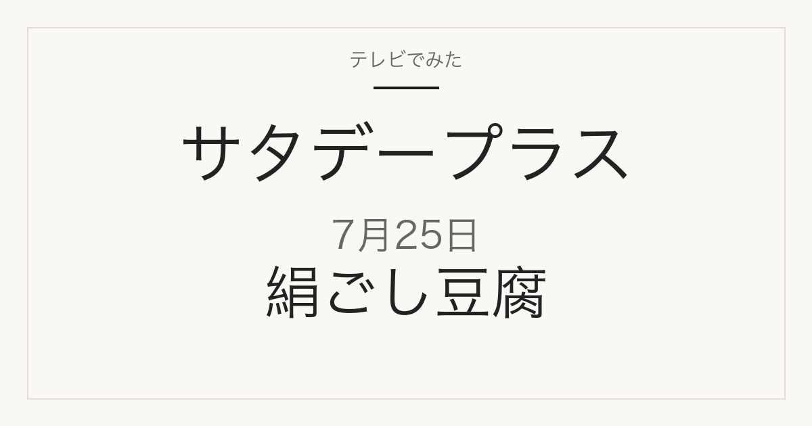

1位／番組掲載価格 246円
タカノフーズ
おかめ豆腐 濃い絹美人 150g×3
3個入りで246円。1個あたり約82円です。メーカー商品です。スーパーや通販で扱われます。この回ではタカノフーズの商品が2品ランクインしています。
テレビ紹介商品の記録メディア
2026年7月25日（土）放送
「ひたすら試してランキング」で調査された5品

2026年7月25日放送のサタデープラス「ひたすら試してランキング」は絹ごし豆腐。清水アナウンサーが10時間以上かけて5商品を比較し、ベスト5を選んでいます。番組掲載価格は149円から246円まで幅があります。
この記事には広告・アフィリエイトリンクが含まれます。順位・商品名・番組掲載価格は番組公式情報で確認しています。価格は2026年7月25日時点の番組調べで、現在の販売価格・在庫・取り扱いは変わります。1個あたりの価格は番組掲載価格と商品名の内容量から算出したものです。
味や使い勝手だけでなくコストパフォーマンスが項目に入っているため、上位が最安とは限りません。価格は下の一覧で確認してください。
| 順位 | ブランド | 商品名 | 番組掲載価格 | 換算価格 |
|---|---|---|---|---|
| 1位 | タカノフーズ | おかめ豆腐 濃い絹美人 150g×3 | 246円 | 1個あたり約82円 / 100gあたり約55円 |
| 2位 | アサヒコ | 職人豆腐硬派仕込 150g×3 | 192円 | 1個あたり約64円 / 100gあたり約43円 |
| 3位 | タカノフーズ | おかめ豆腐 絹美人 150g×3 | 231円 | 1個あたり約77円 / 100gあたり約51円 |
| 4位 | 町田食品 | 昔なつかし昭和の味絹ごし 400g | 192円 | 100gあたり約48円 |
| 5位 | やまみ | 禅豆腐 とよまさり絹 320g | 149円 | 100gあたり約47円 |
1位／番組掲載価格 246円
タカノフーズ
3個入りで246円。1個あたり約82円です。メーカー商品です。スーパーや通販で扱われます。この回ではタカノフーズの商品が2品ランクインしています。
2位／番組掲載価格 192円
アサヒコ
3個入りで192円。1個あたり約64円です。メーカー商品です。スーパーや通販で扱われます。
3位／番組掲載価格 231円
タカノフーズ
3個入りで231円。1個あたり約77円です。メーカー商品です。スーパーや通販で扱われます。この回ではタカノフーズの商品が2品ランクインしています。

150g×3P×3個のセットで、番組掲載の150g×3とは販売単位が違います。冷蔵商品です。
4位／番組掲載価格 192円
町田食品
400gで192円。100gあたり約48円です。メーカー商品です。スーパーや通販で扱われます。
5位／番組掲載価格 149円
やまみ
320gで149円。100gあたり約47円です。メーカー商品です。スーパーや通販で扱われます。
このランキングで最も安いのはやまみ「禅豆腐 とよまさり絹 320g」の149円、最も高いのはタカノフーズ「おかめ豆腐 濃い絹美人 150g×3」の246円です。番組1位のタカノフーズ「おかめ豆腐 濃い絹美人 150g×3」は246円で、最安の商品とは97円の差があります。内容量あたりで見るとアサヒコ「職人豆腐硬派仕込 150g×3」が最も割安です。商品によって入り数や内容量が違うので、表示価格だけでなく換算価格で比べてください。
通販では番組と販売単位が違うことがあります。商品名だけでなく内容量と入り数を合わせて確認してください。
2026年7月25日放送の1位は、タカノフーズ「おかめ豆腐 濃い絹美人 150g×3」です。番組掲載価格は246円でした。
①崩れにくさ ②冷ややっこの味 ③みそ汁での味 ④コストパフォーマンス ⑤麻婆豆腐の味を清水アナウンサーが調査したランキングです。
スーパーや通販で扱われるメーカー商品が中心です。放送から時間が経っているため、販売が終了している場合があります。
順位・商品名・番組掲載価格は2026年7月25日現在の番組公式情報によります。